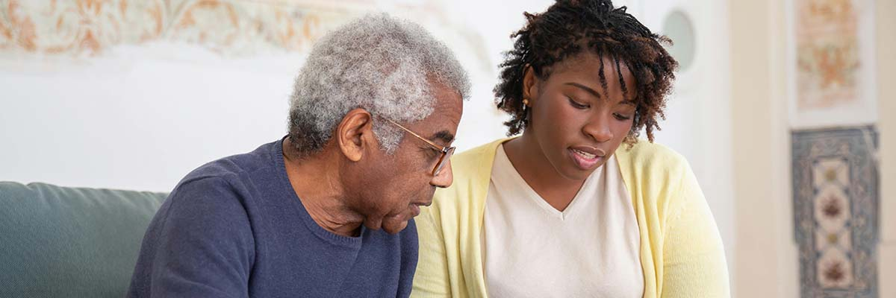

SideBySide - Conectando Gerações
No SideBySide, acreditamos no poder das conexões humanas para transformar vidas. Nossa missão é criar uma ponte entre gerações, oferecendo aos idosos a companhia de jovens dedicados para ajudá-los em atividades essenciais.
Mais do que assistência, oferecemos presença, empatia e uma oportunidade para que os idosos se sintam valorizados e ativos. Cada jovem que participa do projeto é cuidadosamente selecionado e está em busca de construir seu futuro por meio dos estudos. Ao ajudar, eles também recebem apoio financeiro para alcançar seus sonhos.
Nosso objetivo é simples, mas poderoso: promover qualidade de vida para os idosos e, ao mesmo tempo, investir no potencial de jovens que desejam fazer a diferença. Juntos, criamos um ambiente de troca, aprendizado e cuidado mútuo, onde cada encontro é uma oportunidade de crescimento e inspiração.
SideBySide: conectando gerações, fortalecendo vínculos e transformando vidas, uma hora de companhia por vez.